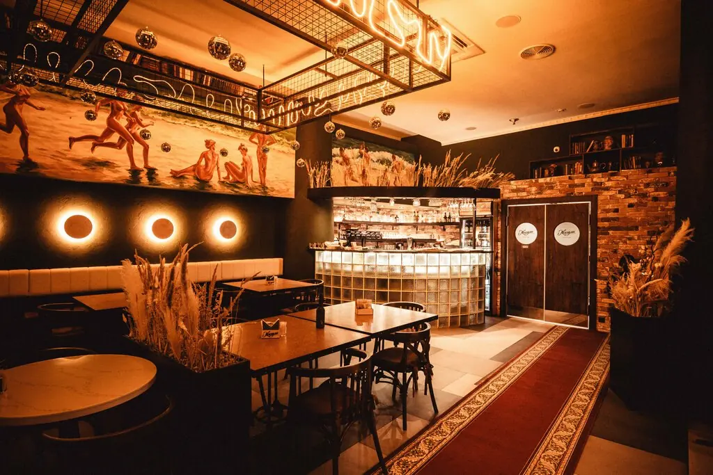
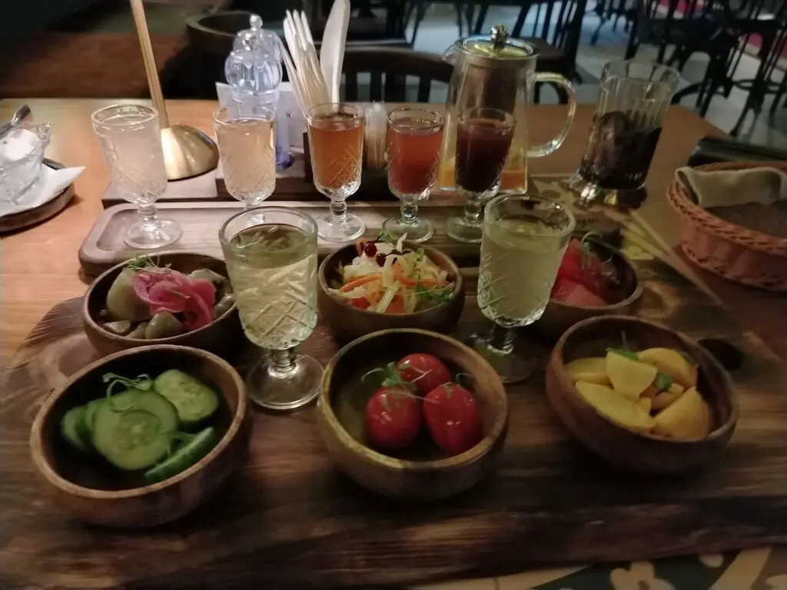
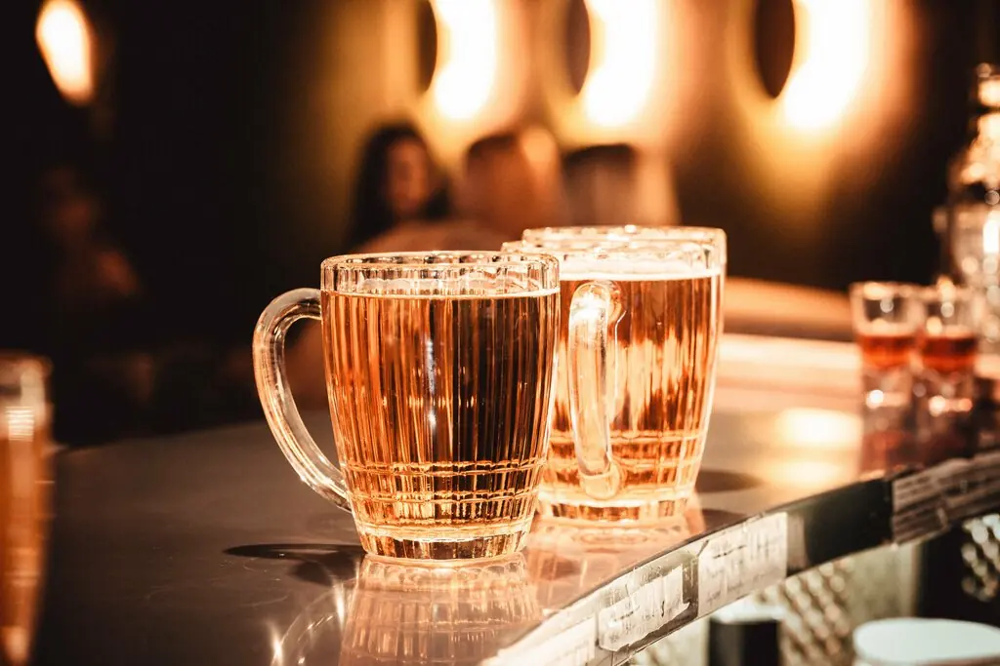
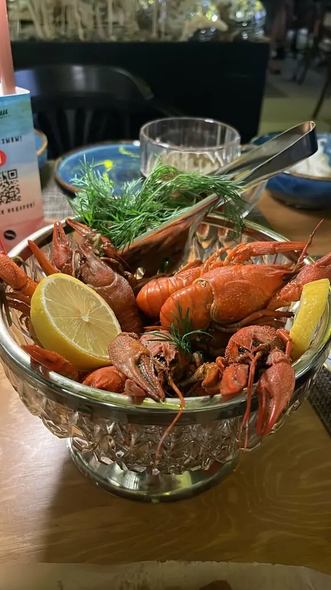
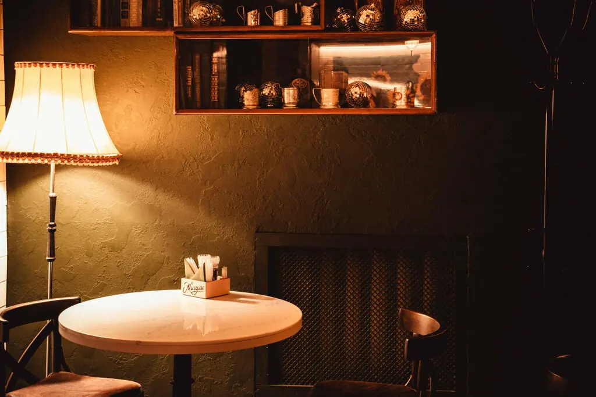
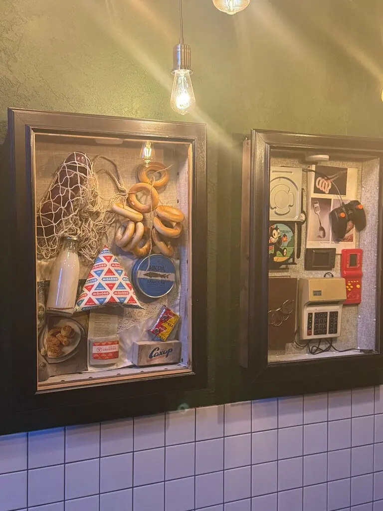
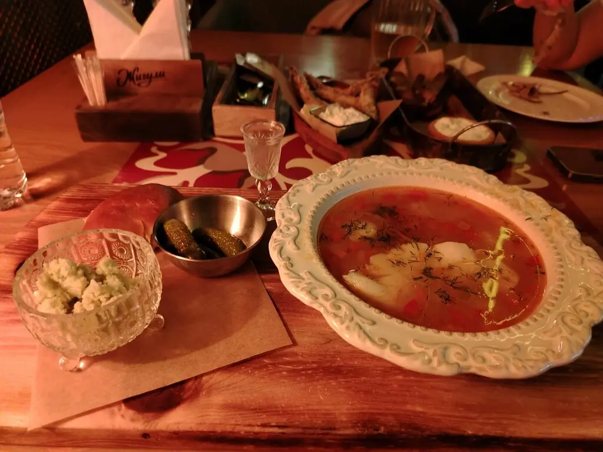

Волгоград · ежедневный выпуск+7 988 969-82-82
Жигули
Раки сварены, пиво налито, стол ждёт вас
Наш корреспондент сообщает: на Советской, 5 работают рестобар, палас как у бабушки и гранёные стаканы. Очередь за столиком отменяется, теперь его можно заказать онлайн.
5,0 · 2192 оценки

Талоны на питание
Часть меню с Яндекс Карт, цены и порции уточняйте у официанта.
Снимки с места






Книга отзывов
Очень приятная ретро-атмосфера. Старые мозаики на стенах, палас в коридоре как у бабушки, книжные полки, те самые гранёные стаканы.Соня С.
Спасибо за замечательный вечер и новые эмоции! Вкусные блюда, свежее пиво и профессиональный персонал.Яна Колмакова
Мойва жареная, картошечка жареная с грибочками и салом жареным.Виктория Грабская